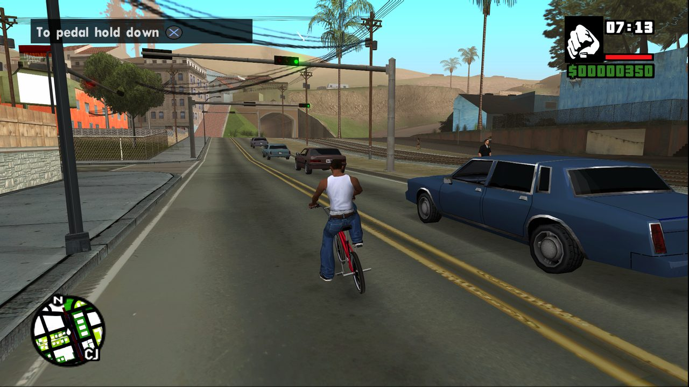

PCSX2 2.8 chega com foco em desempenho
Emulação · 28 de agosto de 2026

O PCSX2 2.8.0 foi lançado cerca de seis meses depois da versão 2.6.0, com mudanças concentradas no motor gráfico: mais desempenho, correções de renderização e mais precisão.
No Windows, o Direct3D 12 virou o renderizador padrão para placas NVIDIA e AMD, e os requisitos recomendados foram reorganizados em três níveis: mínimo, moderado e pesado.
Fonte: blog oficial do PCSX2. Este texto é um resumo; para os detalhes, leia a matéria original.